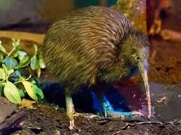
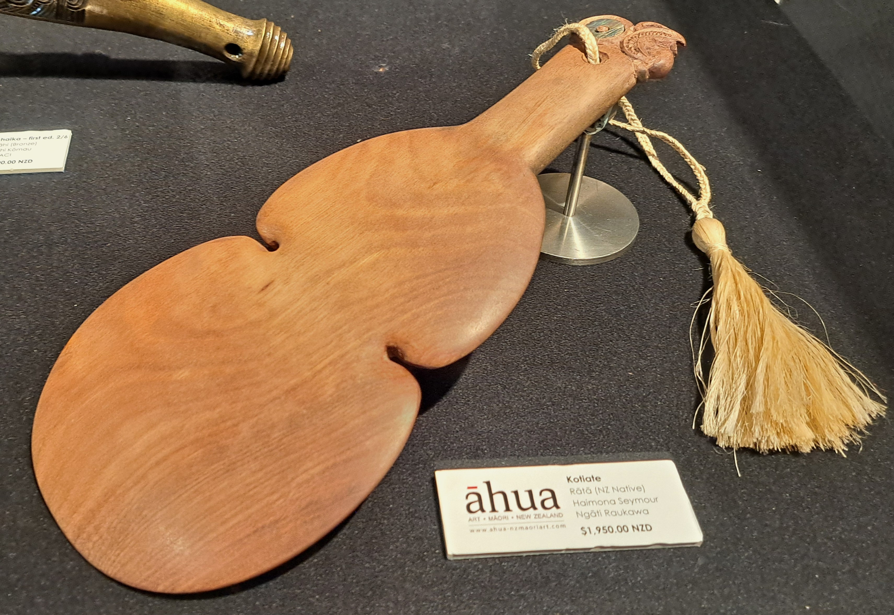
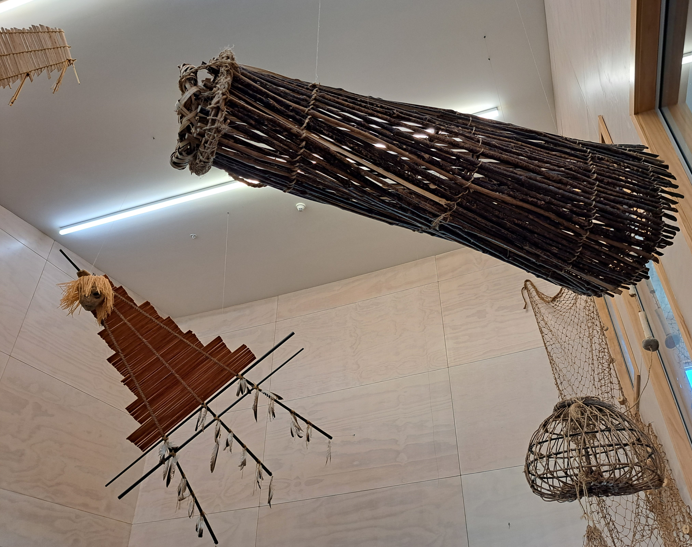

Day Walk
By daylight, Te Puia’s geothermal valley feels alive in every direction. Guests can wander along guided or self‑guided paths that weave through steaming vents, bubbling mud pools, and the towering presence of Pōhutu Geyser. Along the way, guides share kōrero about the valley’s history, geology, and cultural significance, turning every step into a deeper connection with Te Arawa and the land. Whether you’re exploring with whānau or travelling solo, the valley provides a calm, spacious environment where you can take your time, breathe in the steam, and experience the rhythm of the whenua.
Night Walk
When the sun sets, Te Puia transforms into something truly magical. Night walks guide visitors through the valley under soft lighting, revealing geothermal features in a completely new way. Night walks blend atmosphere with storytelling, offering visitors a chance to experience Te Puia with fewer crowds and a deeper sense of intimacy. Guides share kōrero about the valley’s past and present, weaving together geology, culture, and legend.



Kiwi Conservation
Te Puia is home to a special kiwi conservation centre where visitors can meet New Zealand’s iconic national bird in a safe, protected environment. Through guided viewing and expert kōrero, guests learn about kiwi behaviour, threats, and the vital work being done to ensure their survival for future generations.
Cultural Performances
Experience the power of Māori performing arts through live kapa haka presentations. From the thunder of the haka to the grace of waiata and poi, each performance shares the spirit, strength, and storytelling of Te Arawa. It’s an unforgettable expression of mana, pride, and connection.
Taste of Aotearoa
Visitors can enjoy uniquely Māori‑inspired kai, including dishes cooked using geothermal steam and heat. It’s a chance to taste flavours shaped by the land itself, blending traditional methods with modern culinary creativity.